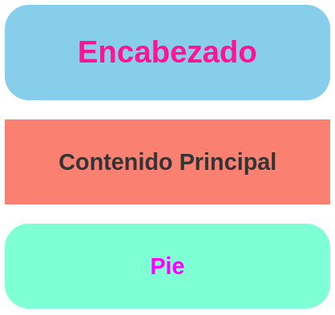
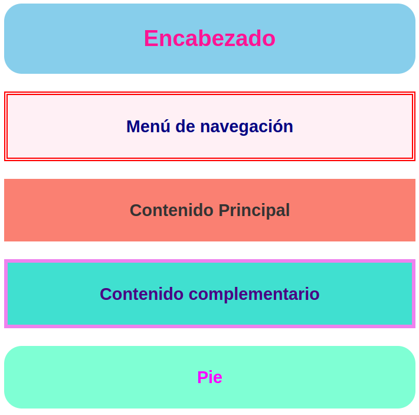
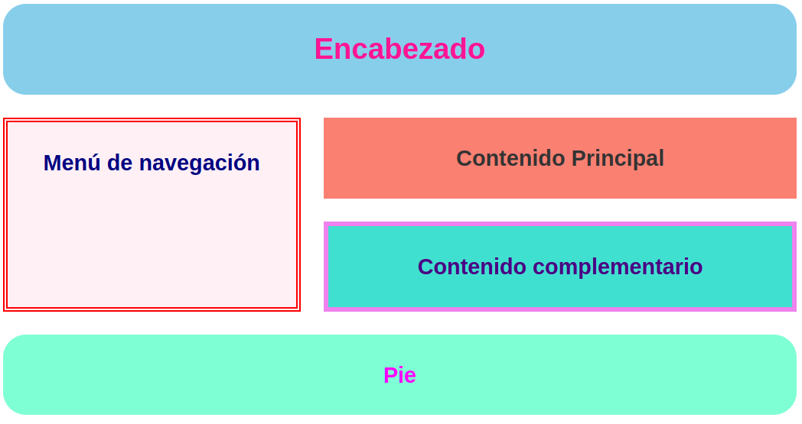
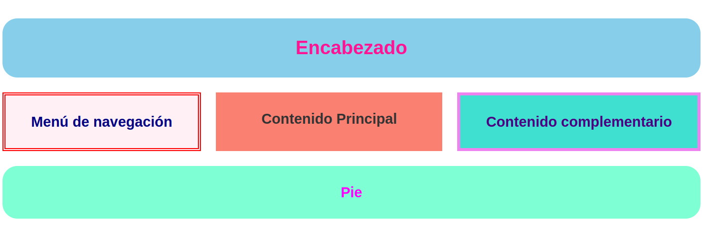

Grid + Media Query
En este ejemplo, nuestra web constará de 5 áreas:
Encabezado (header)
Menú de navegación (menu)
Contenido principal (main)
Contenido complementario (aside)
Pie (footer)
Partiendo de una estructura básica formada por una única columna y 5 filas (una por área) realizaramos modificaciones dependiendo de la anchura de la ventana de navegación (viewport).
Ejemplo 1
Si el ancho de la ventana es inferior a 600 px, usaremos la estructura básica, pero ocultando el menú y el contenido complementario.
Ejemplo 2
Si el ancho está entre 600 y 900 px usaremos la estructura básica
Ejemplo 3
Si el ancho está entre 900 y 1200 px modificaremos la estructura básica de modo que el menú quede a la izquierda.
Ejemplo 4
Si el ancho es superior a 1200 px modificaremos aún más la estructura básica de modo que el contenido complementario quede a la derecha.
